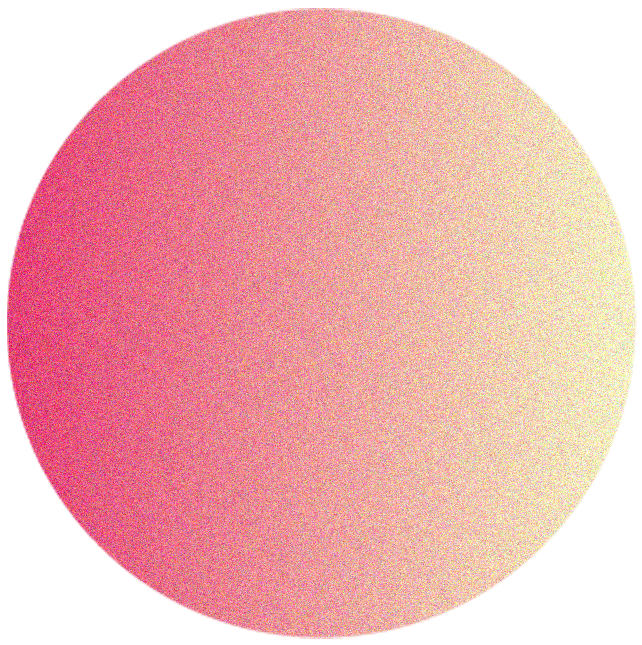

mon parcours
PARCOURS SCOLAIRE
2020-2021
Licence professionnelle Communication Digitale &
Webmastering, IUT de Tarbes (Académie de Toulouse)
2018-2020
BTS Design Graphique
options Communication et médias Imprimés, lycée Joseph Savina (Académie de Rennes)
2017-2018
BTS Métiers de la Mode et du Vêtement option textile et environnement, lycée Ernest Hemingway (Académie de Nîmes)
2016-2017
Baccalauréat Sciences et Technologie du Design & des Arts Appliqués (STD2A), lycée René Goscinny (Académie de Nice)
2015-2016
Seconde générale options Sciences Économiques et Sociales, lycée Masséna (Académie de Nice)
EXPÉRIENCES PROFESSIONNELLES
2020
- Réalisation du logotype de l’entreprise d’un plombier chauffagiste
- Réalisation de différents travaux graphiques pour le musée de Préhistoire de Terra Amata de Nice
- Création du logotype de l’association «Amis du Musée d’Archéologie de Nice»
2019
- Stage de designer graphique à l’agence de communication «Outremer Méditerrannée»
Projet de presse «Marie Claire (Maison) Méditerrannée» (Le Dojo, Nice)
2018
- Réalisation d’affiches pour l’association «Ateliers Illustrés et Partagés», Nice
- Encarts d’appel à films réalisés pour le festival cinématographique «Un festival c’est trop court !»
- Stage d’initiation au métier d’infographiste au service PAO «Ma’Crea» (Nice)
- Stage d’observation des impressions de machines offset à l’imprimerie «Éditions CEF» (Nice)
- Stage en tant que modéliste au Bureau d’Études « Kaporal 5 » (Marseille)
2017
Modèle pour photographe (Nice)
2016
Stage d’observation du métier de webdesigner à Volumic 3D